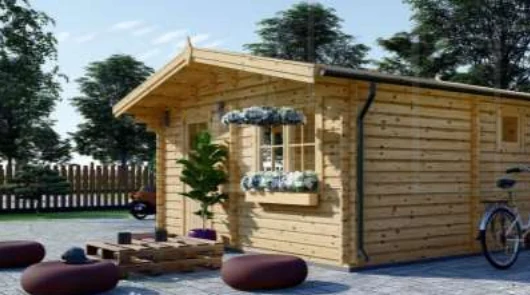

Для отелей, глэмпингов и виноделен
Начните с одного гостевого домика
Добавьте номер на территории действующего объекта. Сравните смету на первый домик и на несколько таких же с доставкой и сборкой.


Отдельный номер с местом под санузел
У «Наины» 19,1 м² основной комнаты и 2,9 м² под санузел. В заводскую комплектацию входят конструкция, окна и двери по спецификации. Оснащение мокрой зоны, подключение сетей и отделку включаем в расчёт по запросу.
- Габариты
- 5 × 5 м
- Внутри
- 22 м²
- Стены
- Брус 44 мм
Один домик к сезону. Дальше по результатам
Сравните стоимость первой установки и повторной поставки на тот же участок. Цена партии зависит от загрузки транспорта и готовности площадки.
- Смета на один и несколько домов
- Отдельно укажем цену единицы, фрахт, разгрузку и общие работы по участку.
- Граница ответственности
- Согласуем, кто готовит основания, подключает сети, ставит санузел и выполняет отделку.
- График до открытия
- Сверим дату готовности площадки и сроки завода. В предложении укажем окно доставки и установки.
Перед расчётом
Что нужно от владельца площадки?
Локация, примерное количество номеров и желаемый месяц запуска. Для точной сметы пригодятся схема участка, данные о сетях и фото подъезда.
Входит ли оснащённый санузел?
На заводском плане предусмотрено отдельное помещение. Сантехника, гидроизоляция, вентиляция и подключение сетей рассчитываются по проекту.
Сколько ждать и как подготовиться к открытию?
По заказному комплекту ориентир поставщика — 1,5–2 месяца после предоплаты. Отдельно согласуются готовность участка, перевозка, монтаж и подключение.
Как оценить окупаемость номера?
Возьмите число проданных ночей и фактический тариф на вашем объекте. Из выручки вычтите комиссии, уборку, содержание и налоги, затем сравните с полной стоимостью установки и оснащения.
Рассчитайте первую поставку
Укажите локацию и количество. Дату открытия можно добавить сразу.